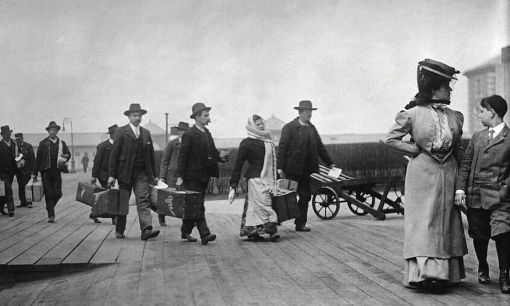
Русские беженцы, 1919 год
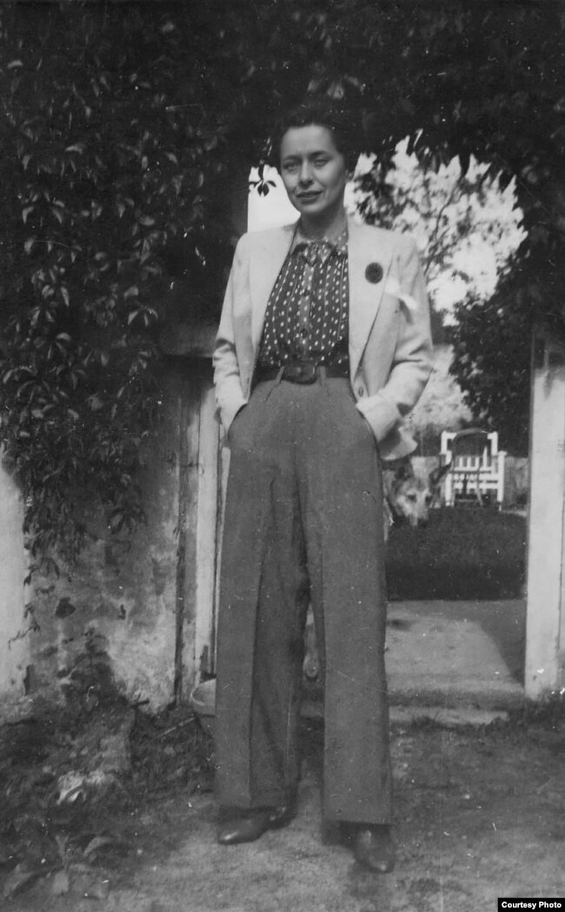
Нина Берберова

Париж, 1925 год
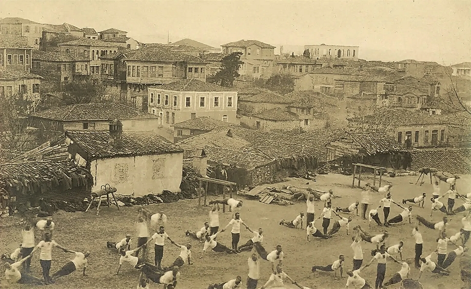
Русские эмигранты
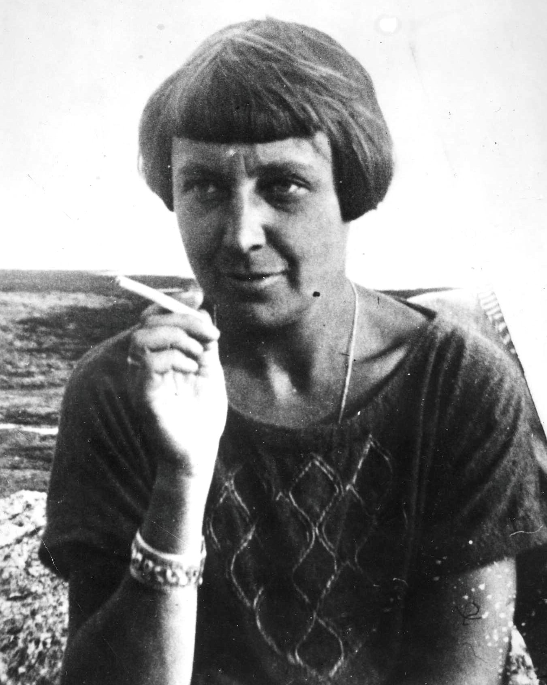
Марина Цветаева
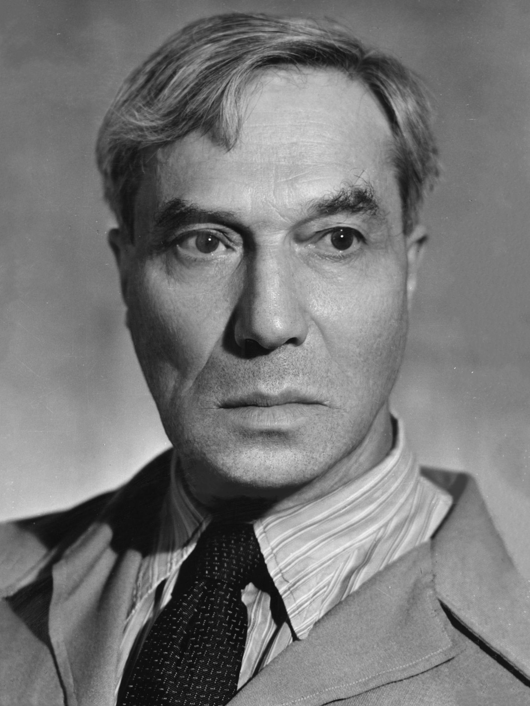
Борис Пастернак

Французская газета

Александр Солженицын
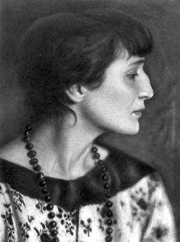
Анна Ахматова
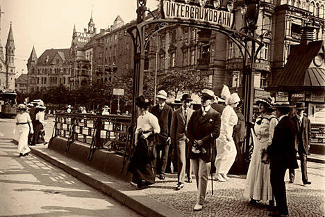
Берлин
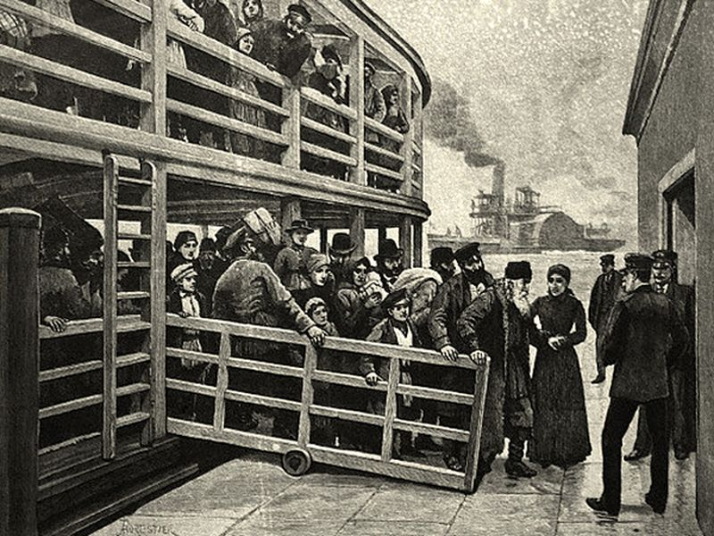
Русские эмигранты в Константинополе
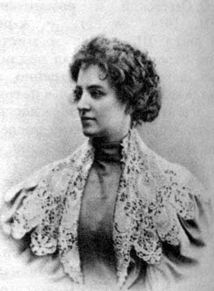
Зинаида Гиппиус

Русские эмигранты
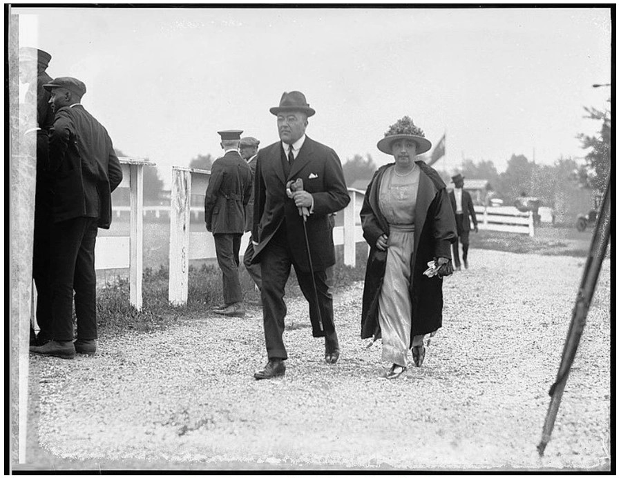
Борис Бахметев с женой, 1922 г.
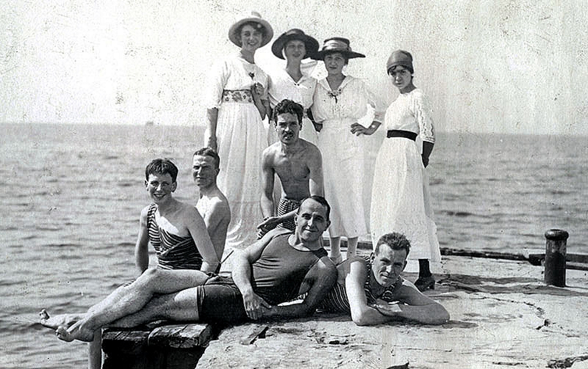
Белоэмигранты на островах. Турция, 1920-е годы
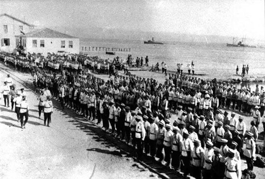
Генерал А. П. Кутепов обходит войска в Галлиполи перед отправкой в Болгарию. 1921 год
_restored.jpg)
Поэты-харбинцы. Слева направо: В. К. Обухов, М. А. Шмейсер, Н. Ильнек, А. И. Несмелов, А. Андреева, А. А. Ачаир
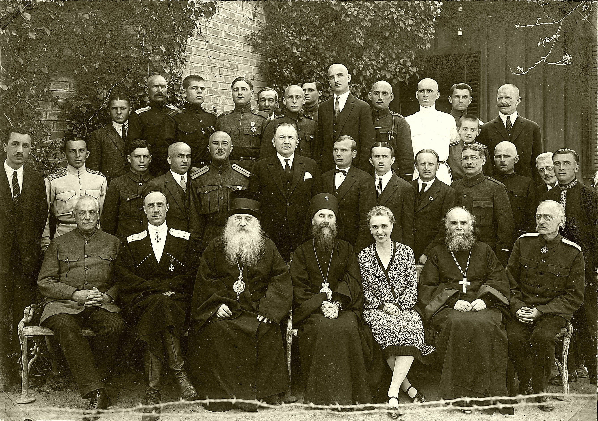
Гости и постояльцы в «Здравнице имени генерала Врангеля» в Белграде на Дединье
Париж 1920-х годов (архивное видео)